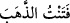
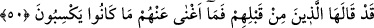
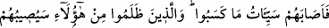

îmânın yerine koymak sûretiyle, inkârı Allah’a sığınma sebebi kılmışlardır. Halbuki
îmânın Allah’a sığınma sebebi edinilmesi gerekir.
“Sonra, kendisine tarafımızdan” fazl ü ihsân olarak “bir nimet verdiğimiz vakit,” “
” karşılık yoluyla değil de fazl ve ihsân yoluyla verilen şeylere mahsustur. “Bu
bana ancak bilgimden” yâni onu kazanma yollarını bildiğimden “dolayı verilmiştir”
Onun kazanılma ve elde edilme şeklini bildim ve kazancım hasıl oldu. “der.” Ya da ‘bu,
bana faziletimden ve benim hakkım olduğu için’ veya ‘hakkım olduğunu Allah da bildiği
için verilmiştir, yâni Allah benim bu nimete müstahak olduğumu bildi, der. Sonra Allah
Teâlâ onun söylediklerini reddederek şöyle buyuruyor:
“Hayır o,” nimet insan için şükredecek mi yoksa inkâr/nankörlük mü edecek diye “bir
imtihandır,” Altının saflığını görmek ve sınamak için ateşe soktuğun zaman “
”
denir. “Fakat çokları” insanların çoğu nimet verilmesinin bir istidrâc ve imtihan
olduğunu “bilmezler.”
50. Bunu onlardan öncekiler de söylemişti; ama kazandıkları şeyler onlara fayda
vermedi.
“Bunu” yâni (önceki âyette geçen) “Bu bana ancak bilgimden dolayı verilmiştir”
sözünü veya cümlesini “onlardan öncekiler” Kârun ve kavmi “de söylemişti;” Kârun:
“Bu, bana kendi bilgim sâyesinde verildi!” (el-Kasas, 28/78) demiş, kavmi de bu
ifâdeye rızâ göstermişti. Bu söze rızâ gösterdikleri için âyet onları çoğul olarak birlikte
zikretmiştir. Bazıları, geçmiş ümmetlerden bu sözü söyleyen başkalarının olmasının da
mümkün olduğunu söylemiştir.
Fakir (Bursevî) der ki: Daha uygun olan da budur. Çünkü Allah Teâlâ bizden önce
gelip geçen iyilerin ve kötülerin hepsinin hallerini bize anlatmadı. Dolayısıyla geçmiş
ümmetlerde nimetin kendilerini şımarttığı, dış görünüşlerine aldanan Kârun’dan başka
bu sözü sarfetmiş kimselerin bulunması da mümkündür.
“Ama kazandıkları şeyler” dünya metâı ve topladıkları mallar “onlara fayda
vermedi.” Yâni, nimet onlardan azab ve nıkmeti/cezâyı savuşturamadı ve onlara fayda
etmedi. el-Müfredât’ta geçtiği üzere bir kişi/şey birine yeterli olduğu zaman “
”
denir.